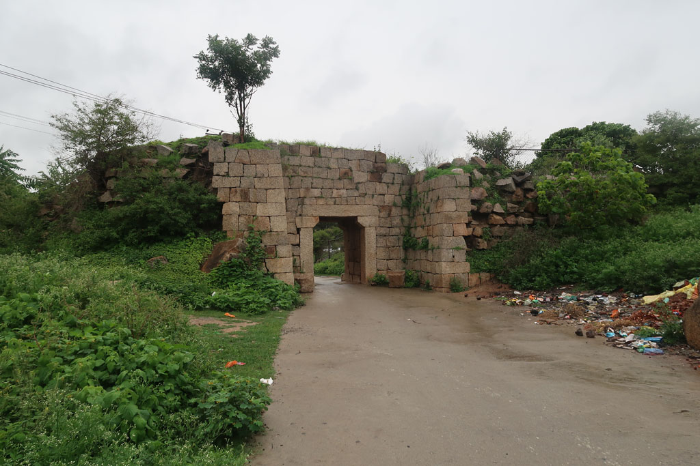
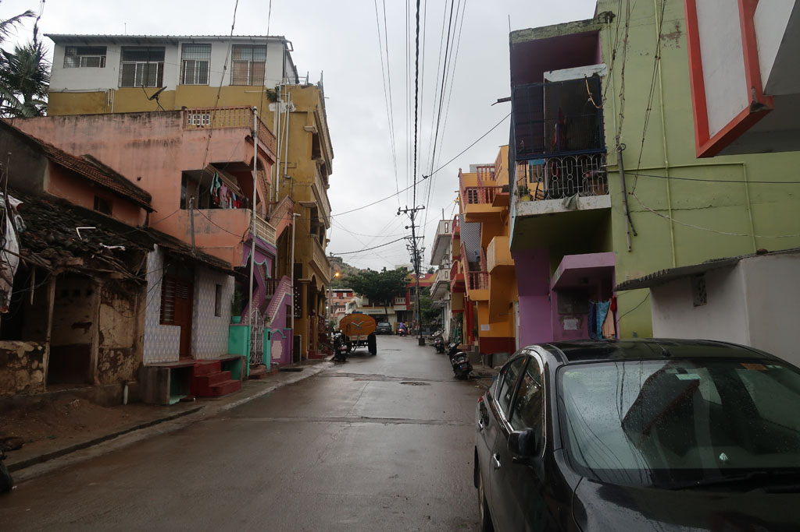
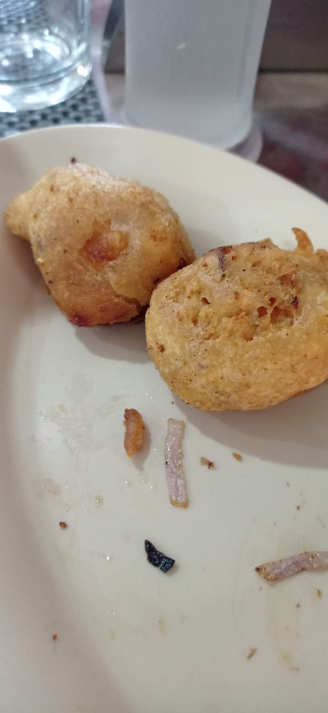
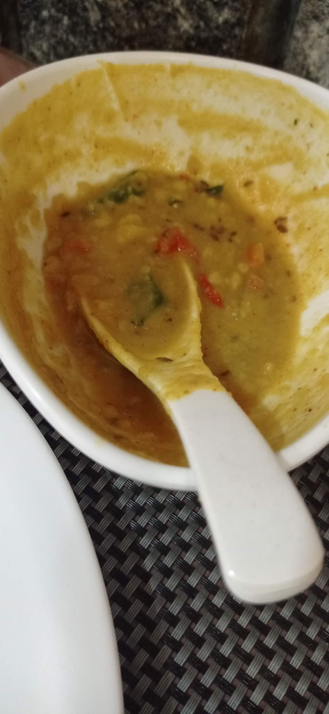
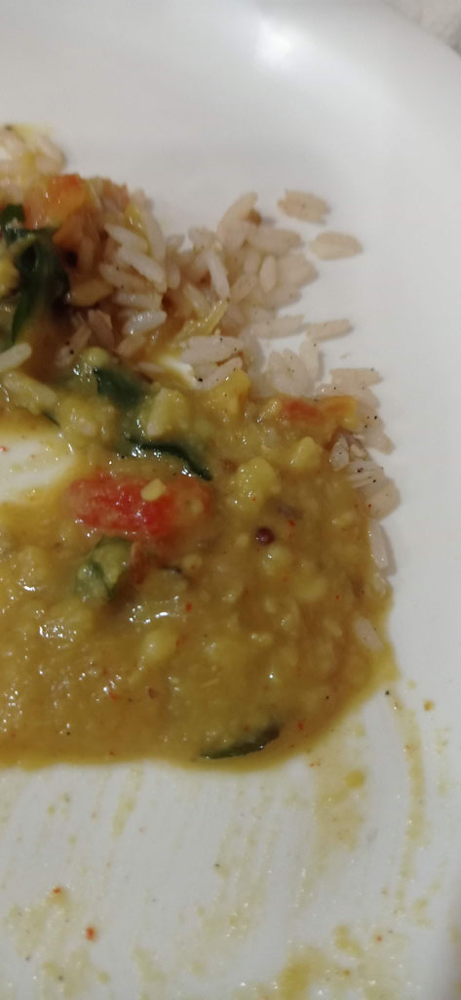
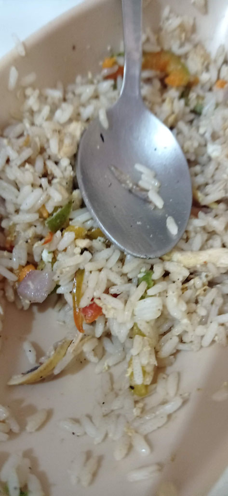
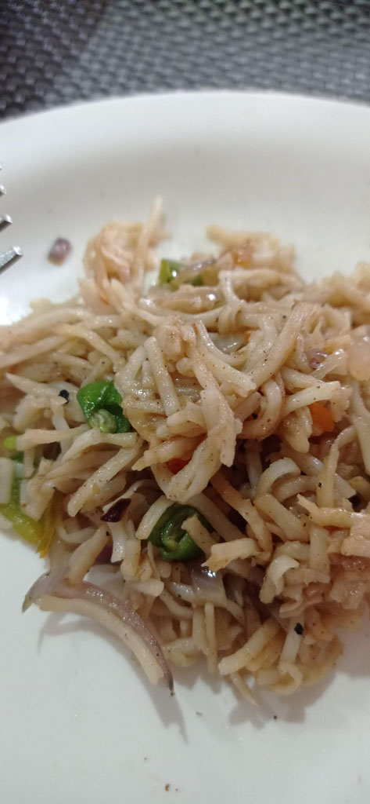
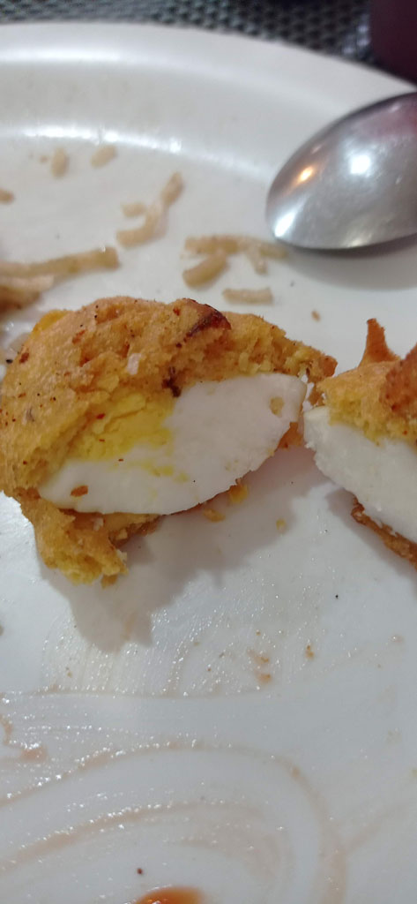

Karnataka / vers Chitradurga
7 h00 réveil. on ne retente pas l’expérience toasts de la veille.
7h45 départ de l’hôtel pour la gare routière. On demande s’il y a un bus direct pour Chitradurga depuis Belur. Il se trouve qu’il y en a un direct à 8h15. Bonne nouvelle, sinon nous avions un itinéraire bis à base de bus + train bcp plus compliqué.
8h30 le chef de poste nous désigne le bus qui entre en gare
12h30 enfin arrivés à la gare routière de Chitradurga. Tuk tuk pour encore une fois un hôtel de la région le Hotel Mayura Durg que nous avons choisi compte tenu de sa localisation juste en face de la principale attraction de la ville le fort. On nous donne la seule chambre qui reste : une chambre avec 7 lits et une terasse.


13h30 nous profitons du restaurant de l’hôtel
14h45 sieste tandis que la mousson arrive.
17h00 balade à pieds dans la vielle ville pour repérer des cantines pour le soir et le lendemain. Ceux encore ouvert dans ce quartier ne nous inspirent pas trop. Nous revenons donc manger à l’hôtel. La cuisine est très bonne.






lavage au baquet après avoir allumé le chauffe eau (la douche chaude ne fonctionne plus)